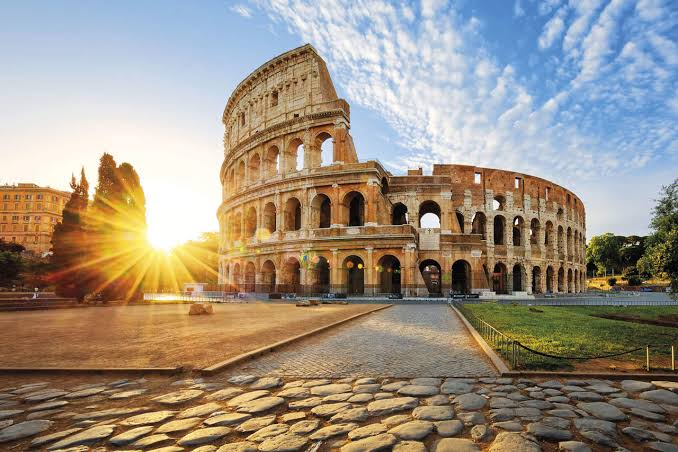

El Coliseo Romano: Icono del Imperio

- Ubicación: Roma, Italia
- Civilización: Imperio Romano
- Periodo: 70 – 80 d.C.
- Declaración UNESCO: 1980
1. Historia y Construcción
Originalmente llamado Amphitheatrum Flavium (Anfiteatro Flavio), su construcción comenzó bajo el mandato del emperador Vespasiano y fue completado en el año 80 d.C. por el emperador Tito. Fue construido en el centro de Roma como un regalo para el pueblo romano, celebrando la grandeza del imperio.
2. Arquitectura e Ingenio
Con una capacidad para más de 50,000 espectadores, contaba con un diseño de arcos de medio punto y un ingenioso sistema de pasillos y escaleras que permitía evacuar a la multitud en pocos minutos. Bajo la arena se encontraba el hipogeo, una compleja red de túneles y jaulas para gladiadores y fieras.
3. Usos y Eventos Históricos
Durante casi 500 años, el Coliseo albergó combates de gladiadores, cacerías de animales, ejecuciones y recreaciones de famosas batallas navales (naumaquias), donde la arena era inundada para hacer flotar embarcaciones a escala.